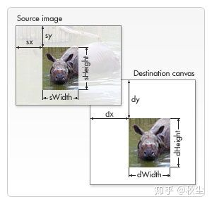

canvas 学习
前言
本人平时学习及收集内容，欢迎参入一起讨论。相关代码在这里
内容
一、介绍
<canvas>是一个可以使用脚本(通常为 JavaScript)来绘制图形的 HTML 元素.例如,它可以用于绘制图表、制作图片构图或者制作简单的(以及不那么简单的)动画.
<canvas> 最早由 Apple 引入 WebKit，用于 Mac OS X 的 Dashboard，随后被各个浏览器实现。如今，所有主流的浏览器都支持它。
二、兼容性处理
2.1 替换文本
我们在<canvas>标签中提供了替换内容。不支持<canvas>的浏览器将忽略容器在中渲染后备内容。而支持<canvas>的浏览器将会忽略在容器中包含的内容，并且只是正常渲染 canvas。
代码如下：
<canvas id="stockGraph" width="150" height="150">
current stock price: $3.15 +0.15
</canvas>
<canvas id="clock" width="150" height="150">
<img src="images/clock.png" width="150" height="150" alt=""/>
</canvas>
2
3
4
5
6
7
2.2 检查支持性
替换内容是用于在不支持<canvas>标签的浏览器中展示的。通过简单的测试getContext()方法的存在，脚本可以检查编程支持性。代码如下：
var canvas = document.getElementById('tutorial');
if (canvas.getContext){
var ctx = canvas.getContext('2d');
// drawing code here
} else {
// canvas-unsupported code here
}
2
3
4
5
6
7
8
三、绘制形状
- 绘制矩形
- 绘制路径
- 移动笔触
- 线
- 图弧
3.1 绘制矩形
HTML中的元素canvas只支持一种原生的图形绘制：矩形。所有其他的图形的绘制都至少需要生成一条路径。
fillRect(x,y,width,height)：绘制一个填充的矩形strokeRect(x,ywidth,height)：绘制一个矩形的边框clearRect(x,ywidth,height)：清除指定矩形区域，让清除部分完全透明。rect(x,y,width,height)：将一个矩形路径增加到当前路径上。绘制一个左上角坐标为(x,y)，宽度为 width 以及 height 的矩形。注：当该方法执行的时候，moveTo()方法自动设置坐标参数(0,0)。也就是说，当前笔触自动重置回默认坐标。
3.2 绘制路径
图形的基本元素是路径。路径是通过不同颜色和宽度的线段或曲线相连形成的不同开着的点的集合。一个路径，甚至一个子路径，都是闭合的。使用路径绘制图形需要一些额外的步骤。
- 首先，你需要创建路径起始点。
- 然后你使用画图命令去画出路径
- 之后你把路径封闭。
- 一旦路径生成，你就能通过搭边或填充路径区域来渲染图形。
用到的函数：
beginPath()：新那一条路径，生成之后，图形绘制命令被指向到路径上生成路径。生成路径的第一步叫做beginPath()。本质上，路径是由很多子路径构成，这些子路径都是在一个列表中，所有的子路径（线、弧形等等）构成图形。而每次这个方法调用之后，列表清空重置，然后我们就可以重新绘制新的图形。closePath()：闭合路径之后图形绘制命令又重新指向到上下文中。不是必需的。这个方法会通过绘制一条从当前点到开始点的直线来闭合图形。如果图形是已经闭合了的，即当前点为开始点，该函数什么也不做。stroke()：通过线条来绘制图形轮廓。fill()：通过填充路径的内容区域生成实心的图形。
3.3 移动笔触
moveTo(x,y)：将笔触移动到指定的坐标 x 以及 y 上。
3.4 线
lineTo(x,y)：绘制一条从当前位置到指定 x 以及 y 位置的直线
3.5 图弧
绘制圆弧或者圆，我们使用arc()方法。当然可以使用arcTo()。
arc(x,y,radius,startAngle,endAngle)：画一个以（x,y）为圆心的以 radius 为半径的圆弧（圆），从 startAngle 开始到 endAngle 结束，按照 anticlockwise 给定的方向来生成arcTo(x1,y1,x2,y2,radius)：根据给定的控制点和半径画一段圆弧，再以直线连接两个控制点。
四、添加样式和颜色
- 色彩
- 透明度
- 线型样式
- 渐变
- 图案样式
- 阴影
4.1 色彩
fillStyle = color：设置图形的填充颜色，需是符合 CSS3 颜色值标准的有效字符串：
ctx.fillStyle = "orange";
ctx.fillStyle = "#FFA500";
ctx.fillStyle = "rgb(255,165,0)";
ctx.fillStyle = "rgba(255,165,0,1)";
2
3
4
strokeStyle = color：设置图形轮廓的颜色。
4.2 透明度
globalAlpha = transparencyValue：这个属性影响到canvas里所有图形的透明度，有效的值范围是 0.0（完全透明）到 1.0（完全不透明），默认是 1.0。strokeStyle和fillStyle属性接受符合 CSS3 规范的颜色值，那我们可以用下面的写法来设置具有透明度的颜色。
// 指定透明颜色，用于描边和填充样式
ctx.strokeStyle = "rgba(255,0,0,0.5)";
ctx.fillStyle = "rgba(255,0,0,0.5)";
2
3
4.3 线型样式
lineWidth = value：设置线条宽度。lineCap = type：设置线条末端样式。lineJoin = type：设定线条与线条间接合处的样式。miterLimit = value：限制当两条线相交时交接处最大长度；所谓交接处长度（斜接长度）是指线条交接处内角顶点到外角顶点的长度。getLineDeash()：返回一个饮食当前虚线样式，长度为非负偶数的数组。setLineDash(setgments)：设置当前虚线样式。lineDashOffset = value：设置虚线样式的起始移量。
4.4 渐变
crateLinearGradient(x1,y1,x2,y2)：该方法接受 4 个参数，表示渐变的起点(x1,y1)与终点(x2,y2)。crateRadialGradient(x1,y1,r1,x2,y2,r2)：该方法接受 6 个参数，前三个定义一个以(x1,y1)为原点，半径为 r1 的圆，后三个参数则定义另一个以(x2,y2)为原点，半径为 r2 的圆。gradient.addColorStop(position,color)：addColorStop方法 2 个参数，position参数必须是一个 0.0 与 1.0 之间的数值，表示渐变中颜色所在的相对位置。
var lineargradient = ctx.createLinearGradient(0,0,150,150);
lineargradient.addColorStop(0,'white');
lineargradient.addColorStop(1,'black');
2
3
4.5 图案样式
createPattern(image,type)：该方法接受两个参数。Image 可以是一个 Image 对象的引用，或者另一个canvas对象。Type 必须是下面的字符串值之一：repeat，repeat-x，repeat-y 和 no-repeat。
var img = new Image()
img.src = 'someimage.png'
var ptrn = ctx.createPattern(img,'repeat');
2
3
4.6 阴影
shadowOffsetX = float和shadowOffsetY = float：shadowOffsetX 和 shadowOffsetY 用来设定阴影在 X 和 Y 轴的延伸距离，它们是不受变换矩阵所影响的。负值表示阴影会往上或左延伸，正值则表示会往下或右延伸，它们默认都为 0.shadowBlur = float：用于设定阴影的模糊程度，其数值并不跟像素数量挂钩，也不受变换矩阵的影响，默认为 0.shadowColor = color：是标准的 CSS 颜色值，用于设定阴影颜色效果，默认是全透明的黑色。
五、绘制文本
fillText(text,x,y[,maxWidth])：在指定的(x,y)位置填充指定的文本，绘制的最大宽度是可选的。strokeText(text, x, y [, maxWidth])：在指定的(x,y)位置绘制文本边框，绘制的最大宽度是可选的。font = value：肖前我们用来绘制文本的样式，这个字符串使用和 CSS font 属性相同的语法，默认的字体是10px sans-serif。textAlign = value：描述绘制文本时，文本的对齐方式的属性。可选的值包括：start,end,left,rightorcenter. 默认值是start。textBaseline = value：基线对齐选项，可选的值包括：top，hanging，middle，alphabetic，ideographic，bottom。默认值alphabetic。direction = value：文本方向。可能的值包括：ltr,rtl,inherit。默认值是inherit。
六、变形
- 状态的的保存和恢复
- 移动 Translating
- 旋转 Rotating
- 缩放 Scaling
- 变形 Transforms
6.1 状态的的保存和恢复
save()：保存画布的所有状态restore()：save 和 restore 方法是用来保存和恢复 canvas 状态的，都没有参数。Canvas 的状态就是当前画面应用的所有样式和变形的一个快照。
6.2 移动 Translating
translate(x, y):translate方法接受两个参数。x 是左右偏移量，y 是上下偏移量，如右图所示。
6.3 旋转 Rotating
rotate(angle): 这个方法只接受一个参数：旋转的角度(angle)，它是顺时针方向的，以弧度为单位的值。
6.4 缩放 Scaling
scale(x, y): scale 方法可以缩放画布的水平和垂直的单位。两个参数都是实数，可以为负数，x 为水平缩放因子，y 为垂直缩放因子，如果比 1 小，会比缩放图形， 如果比 1 大会放大图形。默认值为 1， 为实际大小。
6.5 变形 Transforms
transform(m11, m12, m21, m22, dx, dy): 这个方法是将当前的变形矩阵乘上一个基于自身参数的矩阵，在这里我们用下面的矩阵：
m11 m21 dx
m12 m22 dy
0 0 1
2
3
任意一个参数是无限大，变形矩阵也必须被标记为无限大，否则会抛出异常。
参数各自代表如下：
m11：水平方向的缩放m12：水平方向的倾斜偏移m21：竖直方向的倾斜偏移m22：竖直方向的缩放dx：水平方向的移动dy：竖直方向的移动
setTransform(m11, m12, m21, m22, dx, dy)resetTransform: 重置当前变形为单位矩阵
七、合成与裁剪
globalCompositeOperation = type：这个属性设定了在画新图形时采用的遮盖策略，其值是一个标识 12 种遮盖方式的字符串。clip()：将当前正在构建的路径转换为当前的裁剪路径。
八、像素操作
- createImageData
- getImageData
- putImageData
- 保存图片
8.1 createImageData
创建一个新的具体特定尺寸的 ImageData 对象。所有像素被预设为透明黑。你也可以创建一个被anotherImageData对象指定的相同像素的 ImageData 对象。
var myImageData = ctx.createImageData(width, height);
var myImageData = ctx.createImageData(anotherImageData)
2
8.2 getImageData
var myImageData = ctx.getImageData(left, top, width, height);
这个方法会返回一个 ImageData 对象，它代表了画面区域的对象数据，此画面的四个角落分别表示为(left,top), (left + width, top), (left, top + height), 以及(left + width, top + height)四个点。这些坐标点被设定为画布坐标空间元素。
8.3 putImageData
ctx.putImageData(myImageData, dx, dy);： 你可以用 putImageData()方法去对场景进行像素数据的写入。dx 和 dy 参数表示你希望在场景内左上角绘制的像素数据所得到的设备坐标。
8.4 保存图片
canvas.toDataURL('image/png')： 默认设定。创建一个 PNG 图片canvas.toDataURL('image/jpeg', quality)： 创建一个 JPG 图片。你可以有选择地提供从 0 到 1 的品质量，1 表示最好品质，0 基本不被辨析但有比较小的文件大小。当你从画布中生成了一个数据链接，例如，你可以将它用于任何<image>元素，或者将它放在一个有 download 属性的超链接里用于保存到本地。canvas.toBlob(callback, type, encoderOptions): 这个创建了一个在画布中的代表图片的 Blob 对像。
九、使用图片
引入图像到 canvas 里需要以下两步基本操作：
- 获得一个指向
HTMLImageElement的对象或者另一个 canvas 元素的引用作为源，也可以通过提供一个 URL 的方式来使用图片 - 使用
drawImage()函数将图片绘制到图片上
- 绘制图片
- 缩放图片
- 切片
9.1 绘制图片
drawImage(image, x, y)：其中images是 image 或者 canvas 对象，x和y是其在目标canvas里的起始坐标。
9.2 缩放图片
drawImage(image, x, y, width, height)：参数width和height，这两个参数用来控制当向 canvas 画入时应该缩放的大小
9.3 切片
drawImage(image, sx, sy, sWidth, sHeight, dx, dy, dWidth, dHeight)：第一个参数是一个图像或另一个 canvas 的引用。其它 8 个参数最好是参照右边的图解，前 4 个是定义图像源的切片位置和大小，后 4 个则是定义切片的目标显示位置和大小。

参考资料
联系作者
平凡世界，贵在坚持。

基本动画→